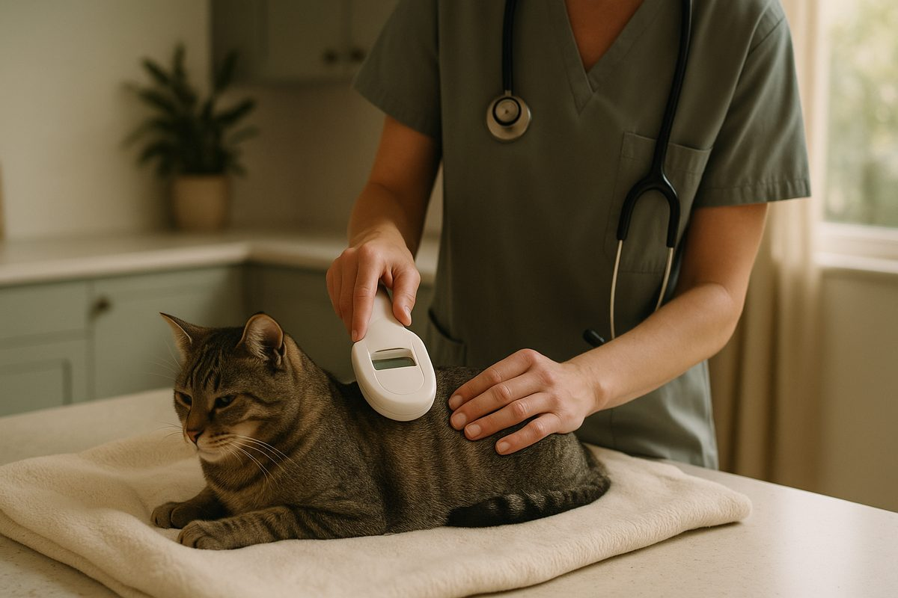
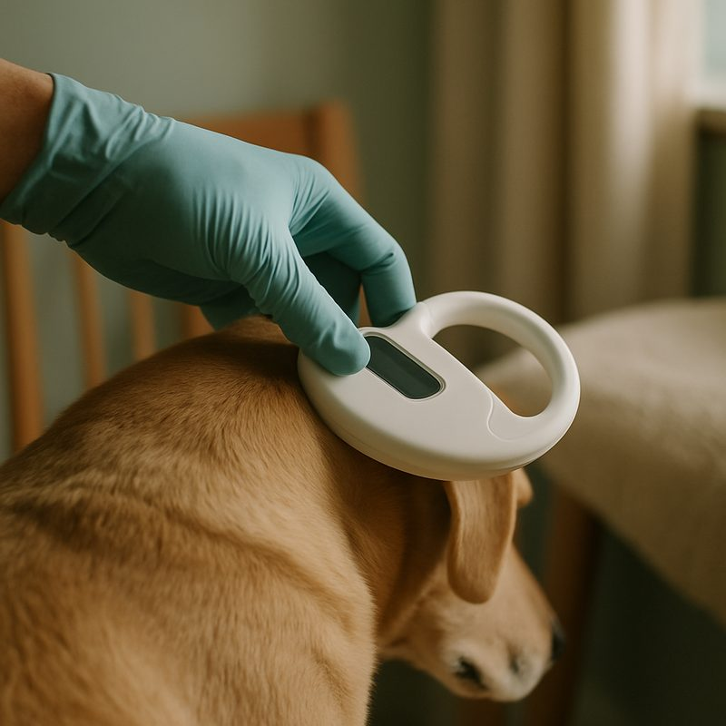

Pet microchipping in Australia, cost, law and what it actually does

A microchip is a rice-grain-sized passive RFID tag injected under the skin between the shoulder blades. It is required by law in most Australian states by 12 weeks of age. The chip itself stores nothing but a unique number, the registry your details are filed against is what actually reunites lost pets. Implant cost is around $50 to $80, registry fees are $7 to $15 once. Below: what it does, what it doesn't, the legal position, and the registry mistakes that defeat the whole system.
If you'd rather just get it done, book microchipping today with a registered vet, it is a 2-minute procedure with no anaesthetic, often bundled into the first vaccination visit. The rest of this page is for owners who want to understand why a chip alone is not enough.
What a microchip actually is
A microchip is a 12mm-long, 2mm-wide passive RFID tag enclosed in biocompatible glass. No battery, no GPS, no signal of its own. It only does anything when a scanner held within a few centimetres energises it, at which point it broadcasts a 15-digit unique number. That is all.
The chip is not a tracker. People hear “microchip” and imagine GPS dog collars, that is a different product (and useful in its own right, especially for escape-artist dogs). The microchip's job is to tie a found pet back to a registered owner. Its job is identification, not tracking.
The Australian law by state
| State | Required by | Penalty for non-compliance |
|---|---|---|
| NSW | 12 weeks or before sale/transfer | Up to $880 individual / $4,400 corporate |
| Victoria | 3 months or before sale | Up to $792 |
| Queensland | 12 weeks or before sale | Up to $645 |
| WA | 3 months or at first registration | Up to $5,000 (rarely enforced at max) |
| ACT | 3 months or before sale | Up to $1,600 |
| Tasmania | 6 months | Up to $785 |
| SA | 3 months | Up to $750 |
| NT | Voluntary (encouraged) | Not applicable |
Penalties are largely a deterrent, councils prefer to see pets get chipped rather than fine owners. A first offence almost always results in a notice giving you a period to comply. Repeat or commercial-breeder offences attract real fines.

What microchipping costs (and shouldn't)
Tell people when not to do this themselves: do not buy unregistered chips online and ask a friend to inject them. The chip won't be issued in any registry, the implantation is illegal in most states unless done by a vet or authorised implanter, and incorrectly implanted chips migrate or fail to read. Get it done at a vet, ideally bundled with desexing or first vaccinations to combine appointments. The cat desexing cost guide and puppy vaccination schedule cover those bundling options.
What happens when a lost pet is found
- A member of the public, vet, council ranger or shelter finds the pet.
- They hold a universal scanner over the back of the neck and shoulders, the chip number is read in 1 to 2 seconds.
- The number is looked up in the federally accessible Australasian Animal Registry network (or sometimes a state-specific registry like the NSW Pet Registry).
- The registry returns the registered owner's contact details to the vet/council.
- You get a phone call. Often within an hour of the pet being found.
The whole process is unglamorous, fast and effective. It only fails when the contact details on the registry are wrong, which is the next section.
Common registry mistakes
- Old phone number on file. The single most common reason microchipped pets are not reunited. Update within a fortnight of any phone or email change.
- Old address. Less critical than the phone number but matters if the registry tries email or post. Update at the same time.
- Old owner. When you take on a rehomed dog, the previous owner's details often stay on the chip. Transfer ownership formally, the registries have a free or low-cost form.
- Chip implanted but never registered. A chip without a registry record is useless. Some breeders implant before sale but leave registration to the new owner, who then forgets. Check with the chip number on file at the vet.
- Multiple chips by mistake. Rare but happens at adoption. Two chips both registered create confusion. Get the vet to scan, identify, and decommission the spare.
Straight answers
Is microchipping painful?
Mild and brief. The needle is wider than a vaccination needle, the implant takes about 2 seconds. Most dogs and cats yelp once or barely react. Done at desexing under anaesthetic, the pet doesn't feel it at all.
Does the chip track my pet's location?
No. A microchip is passive, it has no battery and no GPS. It only stores a unique number that a scanner reads when held within a few centimetres of the pet. Lost-pet reunification depends on someone scanning the pet at a vet, ranger or shelter.
What happens if my pet is found?
Vets, councils and shelters scan every stray. The number is matched to the registry (Petsafe, Central Animal Records, NSW Pet Registry, etc.) which holds your contact details. They call you. The whole process takes minutes if your details are current.
Do I need to update the registry when I move?
Yes, and most owners don't. A chip with out-of-date contact details is the single most common reason microchipped pets aren't reunited. Most registries let you update online for free or a small fee.
Is microchipping required by law in Australia?
In NSW, Victoria, ACT, WA, Queensland and Tasmania, yes, by 12 weeks of age or before sale, whichever is sooner. South Australia and the NT have softer rules. Penalties for non-compliance range from $200 to $5,500 depending on the state.
Can the chip move or fall out?
Rarely. Modern chips have an anti-migration sleeve. A small percentage migrate slightly along the shoulder but stay readable. Chip failure is reported in less than 1 per cent of pets over 10 years.
Microchipping is one of the highest-value, lowest-cost things you can do for a pet. Most owners do the implant and forget the registry update. Set a phone reminder for the year you next change provider, that single act keeps the system working. Need help finding a clinic? The find a vet guide has the run-down. Information here is general and isn't a substitute for veterinary advice.